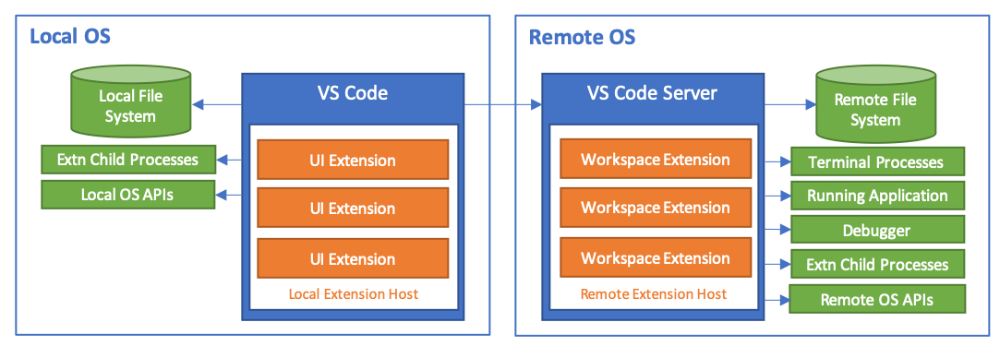
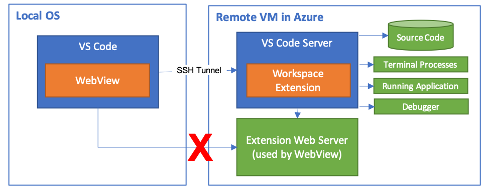
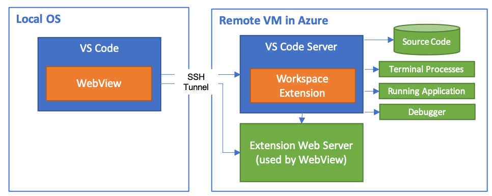

Supporting Remote Development and GitHub Codespaces
Visual Studio Code Remote Development allows you to transparently interact with source code and runtime environments sitting on other machines (whether virtual or physical). GitHub Codespaces is a service that expands these capabilities with managed cloud-hosted environments that are accessible from both VS Code and a browser-based editor.
To ensure performance, Remote Development and GitHub Codespaces both transparently run certain VS Code extensions remotely. However, this can have subtle impacts on how extensions need to work. While many extensions will work without any modifications, you may need to make changes so that your extension works properly in all environments, although these changes are often fairly minor.
This article summarizes what extension authors need to know about Remote Development and Codespaces including the extension architecture, how to debug your extension in remote workspaces or Codespaces, and recommendations on what to do if your extension does not work properly.
Architecture and extension kinds
In order to make working with Remote Development or Codespaces as transparent as possible to users, VS Code distinguishes two kinds of extensions:
-
UI Extensions: These extensions contribute to the VS Code user interface and are always run on the user's local machine. UI Extensions cannot directly access files in the remote workspace, or run scripts/tools installed in that workspace or on the machine. Example UI Extensions include: themes, snippets, language grammars, and keymaps.
-
Workspace Extensions: These extensions are run on the same machine as where the workspace is located. When in a local workspace, Workspace Extensions run on the local machine. When in a remote workspace or when using Codespaces, Workspace Extensions run on the remote machine / environment. Workspace Extensions can access files in the workspace to provide rich, multi-file language services, debugger support, or perform complex operations on multiple files in the workspace (either directly or by invoking scripts/tools). While Workspace Extensions do not focus on modifying the UI, they can contribute explorers, views, and other UI elements as well.
When a user installs an extension, VS Code automatically installs it to the correct location based on its kind. If an extension can run as either kind, VS Code will attempt to choose the optimal one for the situation. UI Extensions are run in VS Code's local Extension Host, while Workspace Extensions are run in a Remote Extension Host that sits in a small VS Code Server. To ensure the latest VS Code client features are available, the server needs to match the VS Code client version exactly. Therefore, the server is automatically installed (or updated) by the Remote Development or GitHub Codespaces extensions when you open a folder in a container, on a remote SSH host, using Codespaces, or in the Windows Subsystem for Linux (WSL). (VS Code also automatically manages starting and stopping the server, so users aren't aware of its presence.)

The VS Code APIs are designed to automatically run on the correct machine (either local or remote) when called from both UI or Workspace Extensions. However, if your extension uses APIs not provided by VS Code — such using Node APIs or running shell scripts — it may not work properly when run remotely. We recommend that you test that all features of your extension work properly in both local and remote workspaces.
Debugging Extensions
While you can install a development version of your extension in a remote environment for testing, if you encounter issues, you will likely want to debug your extension directly in a remote environment. In this section, we will cover how to edit, launch, and debug your extension in GitHub Codespaces, a local container, an SSH host, or in WSL.
Typically, your best starting point for testing is to use a remote environment that restricts port access (for example Codespaces, a container, or remote SSH hosts with a restrictive firewall) since extensions that work in these environments tend to work in less restrictive ones like WSL.
Debugging with GitHub Codespaces
Debugging your extension in GitHub Codespaces preview can be a great starting point since you can use both VS Code and the Codespaces browser-based editor for testing and troubleshooting. You can also use a custom development container if preferred.
Follow these steps:
-
Navigate to the repository that contains your extension on GitHub and open it in a codespace to work with it in a browser-based editor. You can also open the codespace in VS Code if you prefer.
-
While the default image for GitHub Codespaces should have all the needed prerequisites for most extensions, you can install any other required dependencies (for example, using
yarn installorsudo apt-get) in a new VS Code terminal window (⌃⇧` (Windows, Linux Ctrl+Shift+`)). -
Finally, press F5 or use the Run and Debug view to launch the extension inside in the codespace.
Note: You will not be able to open the extension source code folder in the window that appears, but you can open a sub-folder or somewhere else in the codespace.
The extension development host window that appears will include your extension running in a codespace with the debugger attached to it.
Debugging in a custom development container
Follow these steps:
-
To use a development container locally, install and configure the Dev Containers extension, and use File > Open... / Open Folder... to open your source code locally in VS Code. To use Codespaces instead, navigate to the repository that contains your extension on GitHub and open it in a codespace to work with it in a browser-based editor. You can also open the codespace in VS Code if you prefer.
-
Select Dev Containers: Add Dev Container Configuration Files... or Codespaces: Add Dev Container Configuration Files... from the Command Palette (F1), and pick Node.js & TypeScript (or Node.js if you are not using TypeScript) to add the needed container configuration files.
-
Optional: After this command runs, you can modify the contents of the
.devcontainerfolder to include additional build or runtime requirements. See the in-depth Create a Dev Container documentation for details. -
Run Dev Containers: Reopen in Container or Codespaces: Add Dev Container Configuration Files... and in a moment, VS Code will set up the container and connect. You will now be able to develop your source code from inside the container just as you would in the local case.
-
Run
yarn installornpm installin a new VS Code terminal window (⌃⇧` (Windows, Linux Ctrl+Shift+`)) to ensure the Linux versions Node.js native dependencies are installed. You can also install other OS or runtime dependencies, but you may want to add these to.devcontainer/Dockerfileas well so they are available if you rebuild the container. -
Finally, press F5 or use the Run and Debug view to launch the extension inside this same container and attach the debugger.
Note: You will not be able to open the extension source code folder in the window that appears, but you can open a sub-folder or somewhere else in the container.
The extension development host window that appears will include your extension running in the container you defined in step 2 with the debugger attached to it.
Debugging using SSH
Follow steps:
-
After installing and configuring the Remote - SSH extension, select Remote-SSH: Connect to Host... from the Command Palette (F1) in VS Code to connect to a host.
-
Once connected, either use File > Open... / Open Folder... to select the remote folder with your extension source code in it or select Git: Clone from the Command Palette (F1) to clone it and open it on the remote host.
-
Install any required dependencies that might be missing (for example using
yarn installorapt-get) in a new VS Code terminal window (⌃⇧` (Windows, Linux Ctrl+Shift+`)). -
Finally, press F5 or use the Run and Debug view to launch the extension inside on the remote host and attach the debugger.
Note: You will not be able to open the extension source code folder in the window that appears, but you can open a sub-folder or somewhere else on the SSH host.
The extension development host window that appears will include your extension running on the SSH host with the debugger attached to it.
Debugging using WSL
Follow these steps:
-
After installing and configuring the WSL extension, select WSL: New Window from the Command Palette (F1) in VS Code.
-
In the new window that appears, either use File > Open... / Open Folder... to select the remote folder with your extension source code in it or select Git: Clone from the Command Palette (F1) to clone it and open it in WSL.
Tip: You can select the
/mnt/cfolder to access any cloned source code you have on the Windows side. -
Install any required dependencies that might be missing (for example using
apt-get) in a new VS Code terminal window (⌃⇧` (Windows, Linux Ctrl+Shift+`)). You will at least want to runyarn installornpm installto ensure Linux versions of native Node.js dependencies are available. -
Finally, press F5 or use the Run and Debug view to launch the extension and attach the debugger as you would locally.
Note: You will not be able to open the extension source code folder in the window that appears, but you can open a sub-folder or somewhere else in WSL.
The extension development host window that appears will include your extension running in WSL with the debugger attached to it.
Installing a development version of your extension
Anytime VS Code automatically installs an extension on an SSH host, inside a container or WSL, or through GitHub Codespaces, the Marketplace version is used (and not the version already installed on your local machine).
While this makes sense in most situations, you may want to use (or share) an unpublished version of your extension for testing without having to set up a debugging environment. To install an unpublished version of your extension, you can package the extension as a VSIX and manually install it into a VS Code window that is already connected to a running remote environment.
Follow these steps:
- If this is a published extension, you may want to add
"extensions.autoUpdate": falsetosettings.jsonto prevent it from auto-updating to the latest Marketplace version. - Next, use
vsce packageto package your extension as a VSIX. - Connect to a codespace, Dev Containers, SSH host, or WSL environment.
- Use the Install from VSIX... command available in the Extensions view More Actions (
...) menu to install the extension in this specific window (not a local one). - Reload when prompted.
Tip: Once installed, you can use the Developer: Show Running Extensions command to see whether VS Code is running the extension locally or remotely.
Handling dependencies with remote extensions
Extensions can take dependencies on other extensions for APIs. For example:
- An extension can export an API from their
activatefunction. - This API will become available to all extensions running in the same extension host.
- Consumer extensions declare in their
package.jsonthat they depend on the providing extension using theextensionDependenciesproperty.
Extension dependencies work fine when all the extensions are running locally and share the same extension host.
When dealing with remote scenarios, it is possible that an extension running remotely has an extension dependency on an extension running locally. For example, the local extension exposes a command that is critical to the functioning of the remote extension. In this case, we recommend that the remote extension declares the local extension as an extensionDependency, but the problem is that the extensions run on two different extension hosts, which means that the API from the provider is not available to the consumer. It is therefore required that the providing extension give up entirely the ability to export any APIs by using "api": "none" in their extension's package.json. The extensions can still communicate using VS Code commands (which are asynchronous).
This may seem an unnecessarily strict constraint on the providing extension, but an extension that uses "api": "none" only gives up the ability to return APIs from its activate method. Consumer extensions that execute on other extension hosts can still take a dependency on them and will be activated.
Common problems
VS Code's APIs are designed to automatically run in the right location regardless of where your extension happens to be located. With this in mind, there are a few APIs that will help you avoid unexpected behaviors.
Incorrect execution location
If your extension is not functioning as expected, it may be running in the wrong location. Most commonly, this shows up as an extension running remotely when you expect it to only be run locally. You can use the Developer: Show Running Extensions command from the Command Palette (F1) to see where an extension is running.
If the Developer: Show Running Extensions command shows that a UI extension is incorrectly being treated as a workspace extension or vice versa, try setting the extensionKind property in your extension's package.json as described in the Extension Kinds section.
You can quickly test the effect of changing an extension's kind with the remote.extensionKind setting. This setting is a map of extension IDs to extension kinds. For example, if you want to force the Azure Databases extension to be a UI extension (instead of its Workspace default) and the Debugger for Edge to be a workspace extension (instead of its UI default), you would set:
{
"remote.extensionKind": {
"ms-azuretools.vscode-cosmosdb": ["ui"],
"msjsdiag.debugger-for-edge": ["workspace"]
}
}
Using remote.extensionKind allows you to quickly test published versions of extensions without having to modify their package.json and rebuild them.
Persisting extension data or state
In some cases, your extension may need to persist state information that does not belong in settings.json or a separate workspace configuration file (for example .eslintrc). To solve this problem, VS Code provides a set of helpful storage properties on the vscode.ExtensionContext object passed to your extension during activation. If your extension already takes advantage of these properties, it should continue to function regardless of where it runs.
However, if your extension relies on current VS Code pathing conventions (for example ~/.vscode) or the presence of certain OS folders (for example ~/.config/Code on Linux) to persist data, you may run into problems. Fortunately, it should be simple to update your extension and avoid these challenges.
If you are persisting simple key-value pairs, you can store workspace specific or global state information using vscode.ExtensionContext.workspaceState or vscode.ExtensionContext.globalState respectively. If your data is more complicated than key-value pairs, the globalStoragePath and storagePath properties provide "safe" paths that you can use to read/write global workspace-specific information in a file.
To use the APIs:
import * as vscode from 'vscode';
import * as fs from 'fs';
import * as path from 'path';
export function activate(context: vscode.ExtensionContext) {
context.subscriptions.push(
vscode.commands.registerCommand('myAmazingExtension.persistWorkspaceData', () => {
// Create the extension's workspace storage folder if it doesn't already exist
if (!fs.existsSync(context.storagePath)) {
fs.mkdirSync(context.storagePath);
}
// Write a file to the workspace storage folder
fs.writeFileSync(
path.join(context.storagePath, 'workspace-data.json'),
JSON.stringify({ now: Date.now() }));
}));
context.subscriptions.push(
vscode.commands.registerCommand('myAmazingExtension.persistGlobalData', () => {
// Create the extension's global (cross-workspace) folder if it doesn't already exist
if (!fs.existsSync(context.globalStoragePath)) {
fs.mkdirSync(context.globalStoragePath);
}
// Write a file to the global storage folder for the extension
fs.writeFileSync(
path.join(context.globalStoragePath, 'global-data.json'),
JSON.stringify({ now: Date.now() }));
}));
}
Sync user global state between machines
If your extension needs to preserve some user state across different machines then provide the state to Settings Sync using vscode.ExtensionContext.globalState.setKeysForSync. This can help prevent displaying the same welcome or updates page to users on multiple machines.
There is an example of using setKeysforSync in the Extension Capabilities topic.
Persisting secrets
If your extension needs to persist passwords or other secrets, you may want to use your local operating system's secret store (Windows Cert Store, the macOS KeyChain, a libsecret-based keyring on Linux, or a browser-based equivalent) rather than the one on the remote machine environment. Further, on Linux you may be relying on libsecret and by extension gnome-keyring to store your secrets, and this does not typically work well on server distros or in a container.
Visual Studio Code does not provide a secret persistence mechanism itself, but many extension authors have opted to use the keytar node module for this purpose. For this reason, VS Code includes keytar and will automatically and transparently run it locally if referenced in a Workspace Extension. That way you can always take advantage of the local OS keychain / keyring / cert store and avoid the problems mentioned above.
For example:
import { env } from 'vscode';
import * as keytarType from 'keytar';
declare const __webpack_require__: typeof require;
declare const __non_webpack_require__: typeof require;
function getNodeModule<T>(moduleName: string): T | undefined {
const r = typeof __webpack_require__ === 'function' ? __non_webpack_require__ : require;
try {
return r(`${env.appRoot}/node_modules.asar/${moduleName}`);
} catch (err) {
// Not in ASAR.
}
try {
return r(`${env.appRoot}/node_modules/${moduleName}`);
} catch (err) {
// Not available.
}
return undefined;
}
// Use it
const keytar = getNodeModule<typeof keytarType>('keytar');
await keytar.setPassword('my-service-name', 'my-account', 'iamal337d00d');
const password = await keytar.getPassword('my-service-name', 'my-account');
Using the clipboard
Historically, extension authors have used Node.js modules such as clipboardy to interact with the clipboard. Unfortunately, if you use these modules in a Workspace Extension, they will use the remote clipboard instead of the user's local one. The VS Code clipboard API solves this problem. It is always run locally, regardless of the type of extension that calls it.
To use the VS Code clipboard API in an extension:
import * as vscode from 'vscode';
export function activate(context: vscode.ExtensionContext) {
context.subscriptions.push(
vscode.commands.registerCommand('myAmazingExtension.clipboardIt', async () => {
// Read from clipboard
const text = await vscode.env.clipboard.readText();
// Write to clipboard
await vscode.env.clipboard.writeText(
`It looks like you're copying "${text}". Would you like help?`
);
})
);
}
Opening something in a local browser or application
Spawning a process or using a module like opn to launch a browser or other application for particular URI can work well for local scenarios, but Workspace Extensions run remotely, which can cause the application to launch on the wrong side. VS Code Remote Development partially shims the opn node module to allow existing extensions to function. You can call the module with a URI and VS Code will cause the default application for the URI to appear on the client side. However, this is not a complete implementation, as options are not supported and a child_process object is not returned.
Instead of relying on a third-party node module, we recommend that extensions take advantage of the vscode.env.openExternal method to launch the default registered application on your local operating system for given URI. Even better, vscode.env.openExternal does automatic localhost port forwarding! You can use it to point to a local web server on a remote machine or codespace and serve up content even if that port is blocked externally.
Note: Currently the forwarding mechanism in the Codespaces browser-based editor only supports http and https requests. However, you can interact with any TCP connection when connecting to a codespace from VS Code.
To use the vscode.env.openExternal API:
import * as vscode from 'vscode';
export async function activate(context: vscode.ExtensionContext) {
context.subscriptions.push(
vscode.commands.registerCommand('myAmazingExtension.openExternal', () => {
// Example 1 - Open the VS Code homepage in the default browser.
vscode.env.openExternal(vscode.Uri.parse('https://code.visualstudio.com'));
// Example 2 - Open an auto-forwarded localhost HTTP server.
vscode.env.openExternal(vscode.Uri.parse('http://localhost:3000'));
// Example 3 - Open the default email application.
vscode.env.openExternal(vscode.Uri.parse('mailto:vscode@microsoft.com'));
})
);
}
Forwarding localhost
While the localhost forwarding mechanism in vscode.env.openExternal is useful, there may also be situations where you want to forward something without actually launching a new browser window or application. This is where the vscode.env.asExternalUri API comes in.
Note: Currently the forwarding mechanism in the Codespaces browser-based editor only supports http and https requests. However, you can interact with any TCP connection when connecting to a codespace from VS Code.
To use the vscode.env.asExternalUri API:
import * as vscode from 'vscode';
import { getExpressServerPort } from './server';
export async function activate(context: vscode.ExtensionContext) {
const dynamicServerPort = await getWebServerPort();
context.subscriptions.push(vscode.commands.registerCommand('myAmazingExtension.forwardLocalhost', async () =>
// Make the port available locally and get the full URI
const fullUri = await vscode.env.asExternalUri(
vscode.Uri.parse(`http://localhost:${dynamicServerPort}`));
// ... do something with the fullUri ...
}));
}
It is important to note that the URI that is passed back by the API may not reference localhost at all, so you should use it in its entirety. This is particularly important for the Codespaces browser-based editor, where localhost cannot be used.
Callbacks and URI handlers
The vscode.window.registerUriHandler API allows your extension to register a custom URI that, if opened in a browser, will fire a callback function in your extension. A common use case for registering a URI handler is when implementing a service sign in with an OAuth 2.0 authentication provider (for example, Azure AD). However, it can be used for any scenario where you want an external application or the browser to send information to your extension.
The Remote Development and Codespaces extensions in VS Code will transparently handle passing the URI to your extension regardless of where it is actually running (local or remote). However, vscode:// URIs will not work with the Codespaces browser-based editor since opening these URIs in something like a browser would attempt to pass them to the local VS Code client rather than the browser-based editor. Fortunately, this can be easily remedied by using the vscode.env.asExternalUri API.
Let's use a combination of vscode.window.registerUriHandler and vscode.env.asExternalUri to wire up an example OAuth authentication callback:
import * as vscode from 'vscode';
// This is ${publisher}.${name} from package.json
const extensionId = 'my.amazing-extension';
export async function activate(context: vscode.ExtensionContext) {
// Register a URI handler for the authentication callback
vscode.window.registerUriHandler({
handleUri(uri: vscode.Uri): vscode.ProviderResult<void> {
// Add your code for what to do when the authentication completes here.
if (uri.path === '/auth-complete') {
vscode.window.showInformationMessage('Sign in successful!');
}
}
});
// Register a sign in command
context.subscriptions.push(
vscode.commands.registerCommand(`${extensionId}.signin`, async () => {
// Get an externally addressable callback URI for the handler that the authentication provider can use
const callbackUri = await vscode.env.asExternalUri(
vscode.Uri.parse(`${vscode.env.uriScheme}://${extensionId}/auth-complete`)
);
// Add your code to integrate with an authentication provider here - we'll fake it.
vscode.env.clipboard.writeText(callbackUri.toString());
await vscode.window.showInformationMessage(
'Open the URI copied to the clipboard in a browser window to authorize.'
);
})
);
}
When running this sample in VS Code, it wires up a vscode:// or vscode-insiders:// URI that can be used as a callback for an authentication provider. When running in the Codespaces browser-based editor, it wires up a https://*.github.dev URI without any code changes or special conditions.
While OAuth is outside the scope of this document, note that if you adapted this sample to a real authentication provider, you may need to build a proxy service in front of the provider. This is because not all providers allow vscode:// callback URIs and others do not allow wildcard host names for callbacks over HTTPS. We also recommend using an OAuth 2.0 Authorization Code with PKCE flow wherever possible (for example, Azure AD supports PKCE) to improve the security of the callback.
Varying behaviors when running remotely or in the Codespaces browser editor
In some cases, your Workspace Extension may need to vary the behavior when running remotely. In others, you might want to vary its behavior when running in the Codespaces browser-based editor. VS Code provides three APIs to detect these situations: vscode.env.uiKind, extension.extensionKind, and vscode.env.remoteName.
Next, you can use the three APIs as follows:
import * as vscode from 'vscode';
export async function activate(context: vscode.ExtensionContext) {
// extensionKind returns ExtensionKind.UI when running locally, so use this to detect remote
const extension = vscode.extensions.getExtension('your.extensionId');
if (extension.extensionKind === vscode.ExtensionKind.Workspace) {
vscode.window.showInformationMessage('I am running remotely!');
}
// Codespaces browser-based editor will return UIKind.Web for uiKind
if (vscode.env.uiKind === vscode.UIKind.Web) {
vscode.window.showInformationMessage('I am running in the Codespaces browser editor!');
}
// VS Code will return undefined for remoteName if working with a local workspace
if (typeof vscode.env.remoteName === 'undefined') {
vscode.window.showInformationMessage('Not currently connected to a remote workspace.');
}
}
Communicating between extensions using commands
Some extensions return APIs as a part of their activation that are intended for use by other extensions (via vscode.extension.getExtension(extensionName).exports). While these will work if all extensions involved are on the same side (either all UI Extensions or all Workspace Extensions), these will not work between UI and Workspace Extensions.
Fortunately, VS Code automatically routes any executed commands to the correct extension regardless of its location. You can freely invoke any command (including those provided by other extensions) without worrying about impacts.
If you have a set of extensions that need to interact with one another, exposing functionality using a private command can help you avoid unexpected impacts. However, any objects you pass in as parameters will be "stringified" (JSON.stringify) before being transmitted, so the object cannot have cyclic references and will end up as a "plain old JavaScript object" on the other side.
For example:
import * as vscode from 'vscode';
export async function activate(context: vscode.ExtensionContext) {
// Register the private echo command
const echoCommand = vscode.commands.registerCommand(
'_private.command.called.echo',
(value: string) => {
return value;
}
);
context.subscriptions.push(echoCommand);
}
See the command API guide for details on working with commands.
Using the Webview API
Like the clipboard API, the Webview API is always run on the user's local machine or in the browser, even when used from a Workspace Extension. This means that many webview-based extensions should just work, even when used in remote workspaces or Codespaces. However, there are some considerations to be aware of so that your webview extension works properly when run remotely.
Always use asWebviewUri
You should use the asWebviewUri API to manage extension resources. Using this API instead of hard coding vscode-resource:// URIs is required to ensure the Codespaces browser-based editor works with your extension. See the Webview API guide for details, but here is a quick example.
You can use the API in your content as follows:
// Create the webview
const panel = vscode.window.createWebviewPanel(
'catWebview',
'Cat Webview',
vscode.ViewColumn.One
);
// Get the content Uri
const catGifUri = panel.webview.asWebviewUri(
vscode.Uri.file(path.join(context.extensionPath, 'media', 'cat.gif'))
);
// Reference it in your content
panel.webview.html = `<!DOCTYPE html>
<html>
<body>
<img src="${catGifUri}" width="300" />
</body>
</html>`;
Use the message passing API for dynamic webview content
The VS Code webview includes a message passing API that allows you to dynamically update your webview content without the use of a local web server. Even if your extension is running some local web services that you want to interact with to update webview content, you can do this from the extension itself rather than directly from your HTML content.
This is an important pattern for Remote Development and GitHub Codespaces to ensure your webview code works in both VS Code and the Codespaces browser-based editor.
Why message passing instead of a localhost web server?
The alternate pattern is to serve up web content in an iframe or have webview content directly interact with a localhost server. Unfortunately, by default, localhost inside a webview will resolve to a developer's local machine. This means that for a remotely running workspace extension, the webviews it creates would not be able to access local servers spawned by the extension. Even if you use the IP of the machine, the ports you are connecting to will typically be blocked by default in a cloud VM or a container. Even if this worked in VS Code, it would not work in the Codespaces browser-based editor.
Here's an illustration of the problem when using the Remote - SSH extension, but the problem also exists for Dev Containers and GitHub Codespaces:

If possible, you should avoid doing this since it complicates your extension significantly. Message passing API can enable the same type of user experience without these types of headaches. The extension itself will be running in VS Code Server on the remote side, so it can transparently interact with any web servers your extension starts up as a result of any messages passed to it from the webview.
Workarounds for using localhost from a webview
If you can't use the message passing API for some reason, there are two options that will work with the Remote Development and GitHub Codespaces extensions in VS Code.
Each option allows webview content to route through the same channel VS Code uses to talk to VS Code Server. For example, if we update the illustration in the previous section for Remote - SSH, you would have this:

Option 1 - Use asExternalUri
VS Code 1.40 introduced the vscode.env.asExternalUri API to allow extensions to forward local http and https requests remotely in a programmatic way. You can use this same API to forward requests to localhost web servers from the webview when your extension is running in VS Code.
Use the API to get a full URI for the iframe and add it to your HTML. You will also need to enable scripts in your webview and add a CSP to your HTML content.
// Use asExternalUri to get the URI for the web server
const dynamicWebServerPort = await getWebServerPort();
const fullWebServerUri = await vscode.env.asExternalUri(
vscode.Uri.parse(`http://localhost:${dynamicWebServerPort}`)
);
// Create the webview
const panel = vscode.window.createWebviewPanel(
'asExternalUriWebview',
'asExternalUri Example',
vscode.ViewColumn.One,
{
enableScripts: true
}
);
const cspSource = panel.webview.cspSource;
panel.webview.html = `<!DOCTYPE html>
<head>
<meta
http-equiv="Content-Security-Policy"
content="default-src 'none'; frame-src ${fullWebServerUri} ${cspSource} https:; img-src ${cspSource} https:; script-src ${cspSource}; style-src ${cspSource};"
/>
</head>
<body>
<!-- All content from the web server must be in an iframe -->
<iframe src="${fullWebServerUri}">
</body>
</html>`;
Note that any HTML content served up in the iframe in the example above needs to use relative pathing rather than hard coding localhost.
Option 2 - Use a port mapping
If you do not intend to support the Codespaces browser-based editor, you can use the portMapping option available in the webview API. (This approach will also work with Codespaces from the VS Code client, but not in the browser).
To use a port mapping, pass in a portMapping object when you create your webview:
const LOCAL_STATIC_PORT = 3000;
const dynamicServerPort = await getWebServerPort();
// Create webview and pass portMapping in
const panel = vscode.window.createWebviewPanel(
'remoteMappingExample',
'Remote Mapping Example',
vscode.ViewColumn.One,
{
portMapping: [
// This maps localhost:3000 in the webview to the web server port on the remote host.
{ webviewPort: LOCAL_STATIC_PORT, extensionHostPort: dynamicServerPort }
]
}
);
// Reference the port in any full URIs you reference in your HTML.
panel.webview.html = `<!DOCTYPE html>
<body>
<!-- This will resolve to the dynamic server port on the remote machine -->
<img src="http://localhost:${LOCAL_STATIC_PORT}/canvas.png">
</body>
</html>`;
In this example, in both the remote and local cases, any requests made to http://localhost:3000 will automatically be mapped to the dynamic port an Express.js web server is running on.
Using native Node.js modules
Native modules bundled with (or dynamically acquired for) a VS Code extension must be recompiled using Electron's electron-rebuild. However, VS Code Server runs a standard (non-Electron) version of Node.js, which can cause binaries to fail when used remotely.
To solve this problem:
- Include (or dynamically acquire) both sets of binaries (Electron and standard Node.js) for the "modules" version in Node.js that VS Code ships.
- Check to see if
vscode.extensions.getExtension('your.extensionId').extensionKind === vscode.ExtensionKind.Workspaceto set up the correct binaries based on whether the extension is running remotely or locally. - You may also want to add support for non-x86_64 targets and Alpine Linux at the same time by following similar logic.
You can find the "modules" version VS Code uses by going to Help > Developer Tools and typing process.versions.modules in the console. However, to make sure native modules work seamlessly in different Node.js environments, you may want to compile the native modules against all possible Node.js "modules" versions and platforms you want support (Electron Node.js, official Node.js Windows/Darwin/Linux, all versions). The node-tree-sitter module is a good example of a module that does this well.
Supporting non-x86_64 hosts or Alpine Linux containers
If your extension is purely written in JavaScript/TypeScript, you may not need to do anything to add support for other processor architectures or the musl based Alpine Linux to your extension.
However, if your extension works on Debian 9+, Ubuntu 16.04+, or RHEL / CentOS 7+ remote SSH hosts, containers, or WSL, but fails on supported non-x86_64 hosts (for example ARMv7l) or Alpine Linux containers, the extension may include x86_64 glibc specific native code or runtimes that will fail on these architectures/operating systems.
For example, your extension may only include x86_64 compiled versions of native modules or runtimes. For Alpine Linux, the included native code or runtimes may not work due to fundamental differences between how libc is implemented in Alpine Linux (musl) and other distributions (glibc).
To resolve this problem:
-
If you are dynamically acquiring compiled code, you can add support by detecting non-x86_64 targets using
process.archand downloading versions compiled for the right architecture. If you are including binaries for all supported architectures inside your extension instead, you can use this logic to use the correct one. -
For Alpine Linux, you can detect the operating system using
await fs.exists('/etc/alpine-release')and once again download or use the correct binaries for amuslbased operating system. -
If you'd prefer not to support these platforms, you can use the same logic to provide a good error message instead.
It is important to note that some third-party npm modules include native code that can cause this problem. So, in some cases you may need to work with the npm module author to add additional compilation targets.
Avoid using Electron modules
While it can be convenient to rely on built-in Electron or VS Code modules not exposed by the extension API, it's important to note that VS Code Server runs a standard (non-Electron) version of Node.js. These modules will be missing when running remotely. There are a few exceptions, like keytar, where there is specific code in place to make them work.
Use base Node.js modules or modules in your extension VSIX to avoid these problems. If you absolutely have to use an Electron module, be sure to have a fallback if the module is missing.
The example below will use the Electron original-fs node module if found, and fall back to the base Node.js fs module if not.
function requireWithFallback(electronModule: string, nodeModule: string) {
try {
return require(electronModule);
} catch (err) {}
return require(nodeModule);
}
const fs = requireWithFallback('original-fs', 'fs');
Try to avoid these situations whenever possible.
Known issues
There are a few extension problems that could be resolved with some added functionality for Workspace Extensions. The following table is a list of known issues under consideration:
| Problem | Description |
|---|---|
| Cannot access attached devices from Workspace extension | Extensions that access locally attached devices will be unable to connect to them when running remotely. One approach to overcome this is to create a companion UI extension whose job is to access the attached device and offers commands that the remote extension can invoke too. Another approach is reverse tunneling, which is being tracked in a VS Code repo issue. |
Questions and feedback
- See Tips and Tricks or the FAQ.
- Search for answers on Stack Overflow.
- Upvote a feature or request a new one, search existing issues, or report a problem.
- Create a development container Template or Feature for others to use.
- Contribute to our documentation or VS Code.
- See our CONTRIBUTING guide for details.